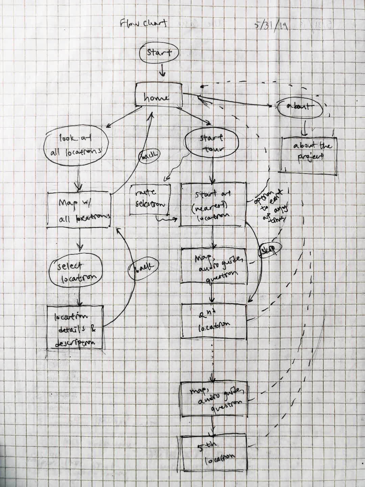
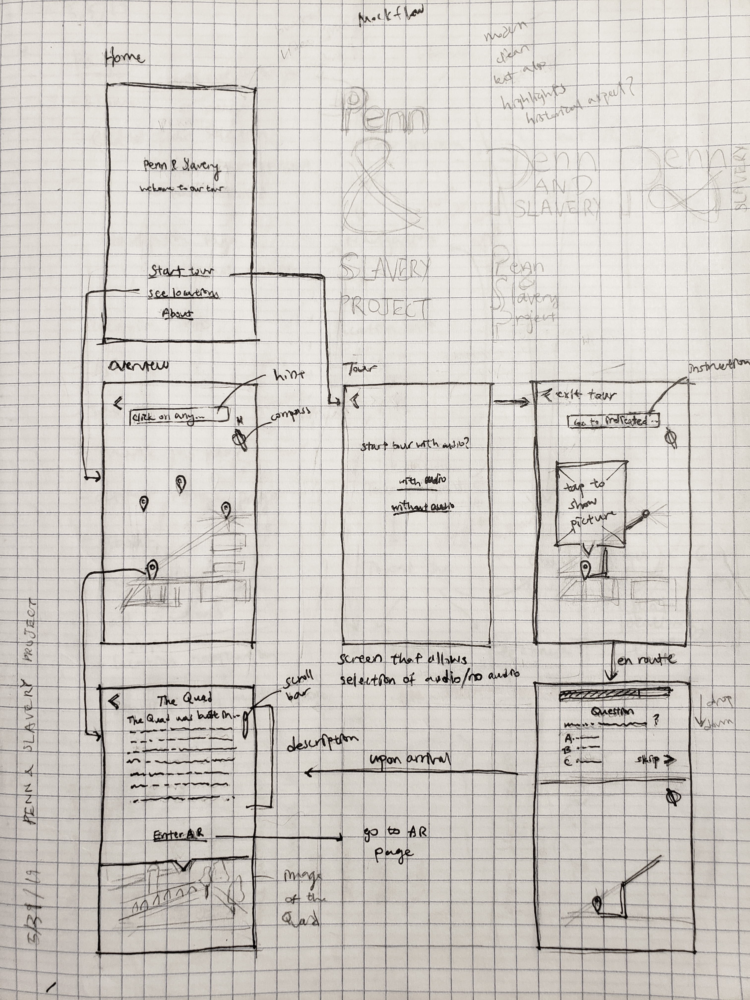
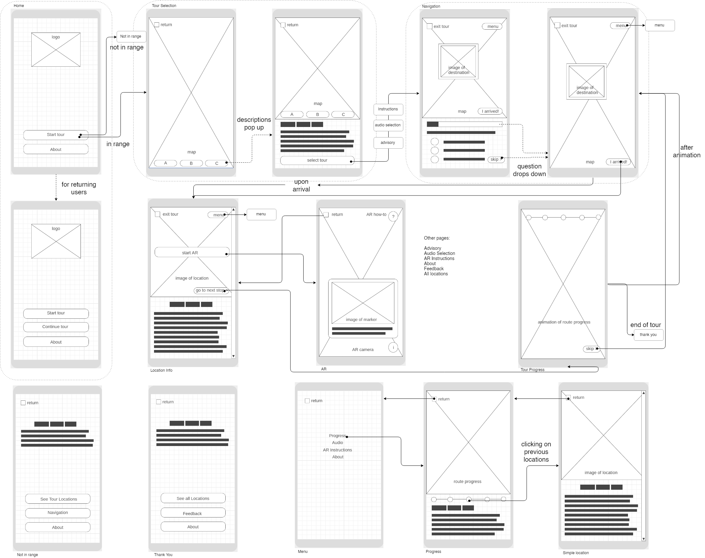
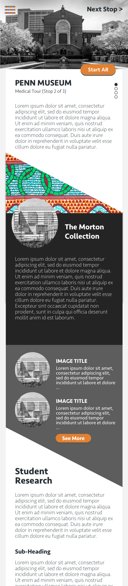
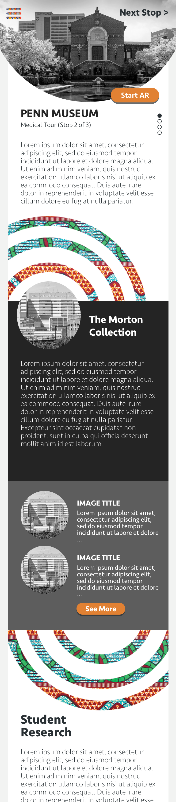
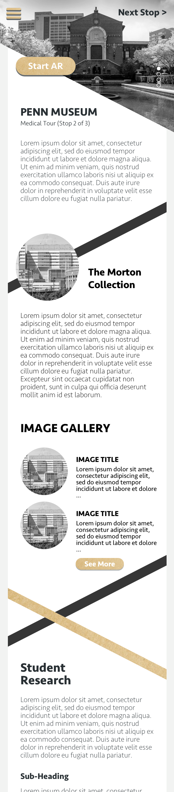
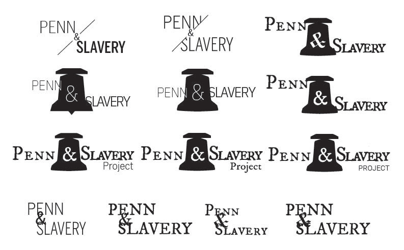
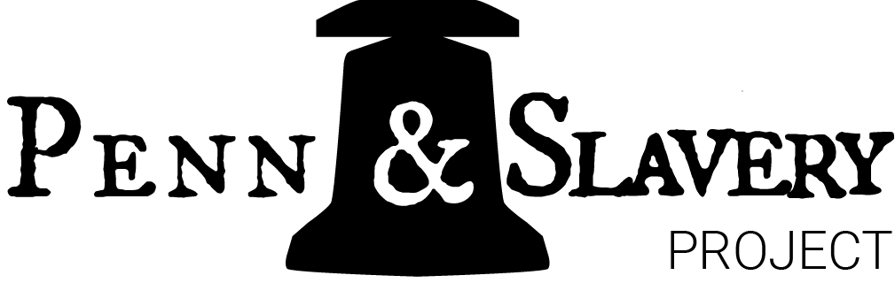

Penn & Slavery Project

Overview
The Penn & Slavery Project was started by a group of UPenn students who were curious about the university’s link to slavery. As the project evolved more and more students and faculty, there was soon a need for an app to educate and spread the information. During summer 2019, I worked with 6 other students on the project’s App Design and Development team. As the only student on the team with graphic and UI design interest, I was responsible for everything ranging from creating wireframes to implementing the UI in Unity.
Problem Statement
The project requirement is ambitious--to create an app that takes users on a historical tour, while incorporating AR into each tour stop. As I took on the task of app design, I knew it would be challenging. The UI would have to connect many diverse elements, from guiding the user between stops, to displaying information, and to launching the AR. Beyond all this, the app was set to finish development by the end of the summer, giving only around 2 to 3 months time for app design, development, and AR creation.
Starting a Discussion
Even given the tight time frame, it was important to consider the user before jumping into the design and development stage.
The management stipulated that the users would be people affiliated with the University of Pennsylvania, as well as within the community. But who are those people? The team and I divided the users down to three main target groups--Penn students, Penn faculty, and community members. We especially wanted to dedicate the app to community members of color, who have long voiced out about the damages Penn has afflicted on their community.
But how do we service them without knowing their needs? Wanting to understand the users, I repeatedly urged management to hold a focus group. After some persistence, a focus group was finally organized, involving faculty and students at UPenn as well as community members. Just as expected, the session gave valuable insights, and revealed many issues that would have otherwise been overlooked. For example, one focus group member suggested that slavery is a triggering topic, and needs to be dealt with carefully. To tackle this problem, the team and I decided to add an advisory screen at the start of the tour. This also prompted the content team to pay special attention to wording. The focus group was a great catalyst for more user-focused discussion among the team.
Onto Designing
First, I sketched out an initial user flow and some initial wireframe sketches, and presented them to the team. The initial wireframe sketch incorporates a home screen with two different routes--to follow a set tour route, or to go to the locations separately. The sketches allowed the app to be visualized, and motivated more product discussion among team members.
 Through bouncing ideas around, more design questions were raised, including whether to have both the option of visiting stops within a tour order and the option of doing it out of order. We also thought about how to clearly direct users to each tour stop, and whether to include a section in between stops to engage the user, such as a quiz question or an audio description. The team and I discussed having only a set tour route as well as a quiz or audio section between stops, which I then depicted through a digital wireframe flow.
The wireframe flow, created using wireframe.cc and draw.io
All About the Presentation
After rounds and rounds of revision and refining, and changing specifications from the management, the wireframe flow was finalized. However, the complex flow diagram, consisting of interweaving arrows and small text, would be daunting to anyone. I decided that for the sake of better visualization within the team, and better presentation to anyone else, a low-fidelity prototype should be created and filled in with mock content.
The interactive prototype helped in more ways than one. It allowed better presentations to management and other teams, since I could demonstrate one screen at a time, and navigate through interactions. It allowed me to pass the app design easily to my team members for testing and feedback. It clearly conveyed the needed features to allow development to begin. It even allowed work to be sent remotely for viewing, with little presentation, since the prototype was self-explanatory.
The low-fidelity prototype, created using Adobe XD
Facing Change
To reach the final design, it was of course important to add colors and customization according to the theme of the app.
At this point, I had taken a 2-week-long vacation, and had just come back to even more changes. Not only was the team getting smaller, and the development progress slowing down, the direct manager was also changed. I came back to learn that a decision was made to remove the tour ordering so users can access the stops more easily, and start and end at any time. Considering the development progress was behind schedule, the changes would simplify the app flow, as well as speed up the development process.
After fully learning the details, I modified the design to reflect those changes. Being on a complex team project made me realize the importance of flexibility.
Adding Personality
Finally, it was time for visual design. During the design process, I researched the subject matter and took inspiration from the team. The easiest direction was to lean into the historical aspect, but I wanted to avoid the cliche yellow paper textures and ornate script. Instead, I opted for a more minimalistic interface to improve readability.
These designs are inspired by Carolyn Purnell’s article on color and culture. While western cultures are more chromophobic, seen in the white minimalistic designs associated with modernity, cultures like Africa and India are chromophilic, which is reflected in their colorful textiles. Since this project explores the intersection between a Western institution and African roots, I decided to mix the theme of chromophobic and chromophilic into my designs. Hence the composition has a minimalistic black and white color scheme with pops of color, added using African textile patterns.
Using these elements, I created high-fidelity prototypes.

The high-fidelity design, created in Sketch
One of the more complex elements of the design was the info page, which both introduces supplemental info related to the AR experience, and launches the experience. At the top of the page, I decide to include both an image of the stop location to better guide users, as well as a “Start AR” button, which serves as a call to action. The page scrolls down to an introduction of the AR experience, descriptions of the stop’s relevant history, as well as an image gallery displaying archival images.
  Info page designs, created using Sketch
I was also asked to create the logo for the Penn & Slavery Project. I made many variations, playing with using a diagnol slash to show Penn’s difficult confrontation with its past, and the ampersand to tie Penn and Slavery together. The final design, chosen by the team, involves a bell. The bell represents both the school bell that one of the slaves who lived at Penn rang between classes, as well as the Liberty Bell in Philadelphia, symbolizing freedom.
Logo prototypes, made in Illustrator
Final logo, made in Illustrator
Key Takeaways
The Penn & Slavery Project was one of the first major UI design projects I worked on. I learned many things along the way:
1.Be flexible. Whether it is in an app development process, or a freelance design project, change could happen any time, and could be out of anyone’s control. It’s important to adapt and to persevere in these situations.
2.Push for change. Even in a structured environment with multiple teams and tiers of management, it is still important to voice your opinions, because it could make a change. Through persistence, I was able to convince management to hold a focus group, and to start user-focused discussions among the app creation team.
3.Make it presentable. Throughout the design process, communication is of utmost importance, whether it is to get feedback from your teammates, to pass on the design to a developer, or to present to management. That is why I converted my designs to easily presentable forms, such as interactable prototypes.
I moved on from designing the product and UI to creating the app interface on Unity as well. It was the first time I came in contact with Unity’s UI tools, but thanks to online tutorials, I was able to finish the app interface and to document it before leaving the team. Although the other parts of the app were not finished by the end of the summer, and the second manager later left this project, it was still an unforgettable and valuable experience. Working in a team setting presented unique challenges and learning opportunities, and also helped create many friendships. To this day, I remain in contact with my past manager, and we update each other occasionally on our journeys.